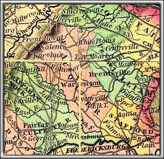
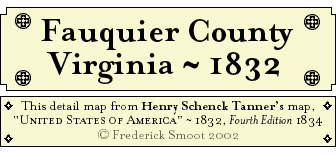

Table of Contents
 Reverend Denny Fairfax with William Smoot
Reverend Denny Fairfax with William Smoot A Lease ~ 1792
John Smoot A Will ~ 1796
Dickerson Wood A Will ~ 1803 With Leonard Smoot & Enoch Smoot, Witnesses Includes Five Named Slaves
Christopher Hitch A Will ~ 1803 With Susan Smoot & Peggy Smoot, Daughters
Henry H. Downing to Edward Smoot A Deed ~ 1820
Edward Smoot to Eleven Smoot A Deed ~ 1824 Includes One Named Slave
Edward Smoot to his Wife & Four Childern Five Deeds ~ 1824 Includes Six Named Slaves
Presley Williams to Wm H. Smoot & Elijah Smith A Deed of Trust ~ 1836
John Smoot A Will ~ 1839
Margaret Smoot A Will ~ 1842 Includes Two Named Slaves Notes Include a Third Named Slave
Thomas P. Smoot of Missouri to Willington Millon A Deed ~ 1854 Includes Thomas P. Smoot’s Mention of: “his late grandfather Daniel Pilcher,” &c. |

© Fred Smoot 2002
All Rights Reserved